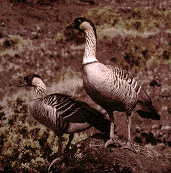

Scientific Name: Nesochen sandvicensisLength: 22-26'', the female is the smaller
Color: black head and nape, grayish-yellow cheek, neck has black furrows, feet and bill are black, feathers brownish white, lower belly and under tailcoverts white
Feet: "From being long away from water, the webs of its feet had become atrophied and shrunken to about half the size of those of other geese." (source: Birds Of Hawaiiby George C. Munro)
Water Habits:
naturally never swims (except for occasionally in lowland lagoons), enjoys swimming in domestication
Predation: introduced mongooses and feral cats feed on eggs, young, and brooding adults, (This hampers any population increase)
Closely Related To: Brant (Branta bernicla) and Canada goose (B.canadensis)
Voice:sounds like a loud "haw" similar to that of the honking Canada goose
